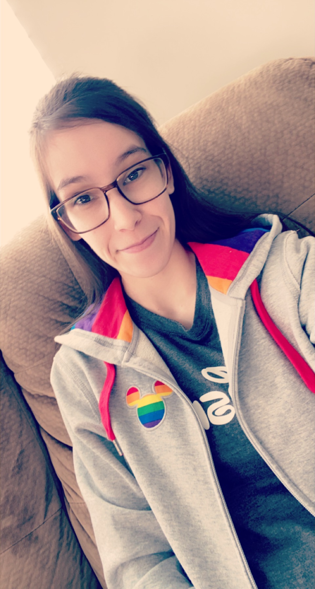
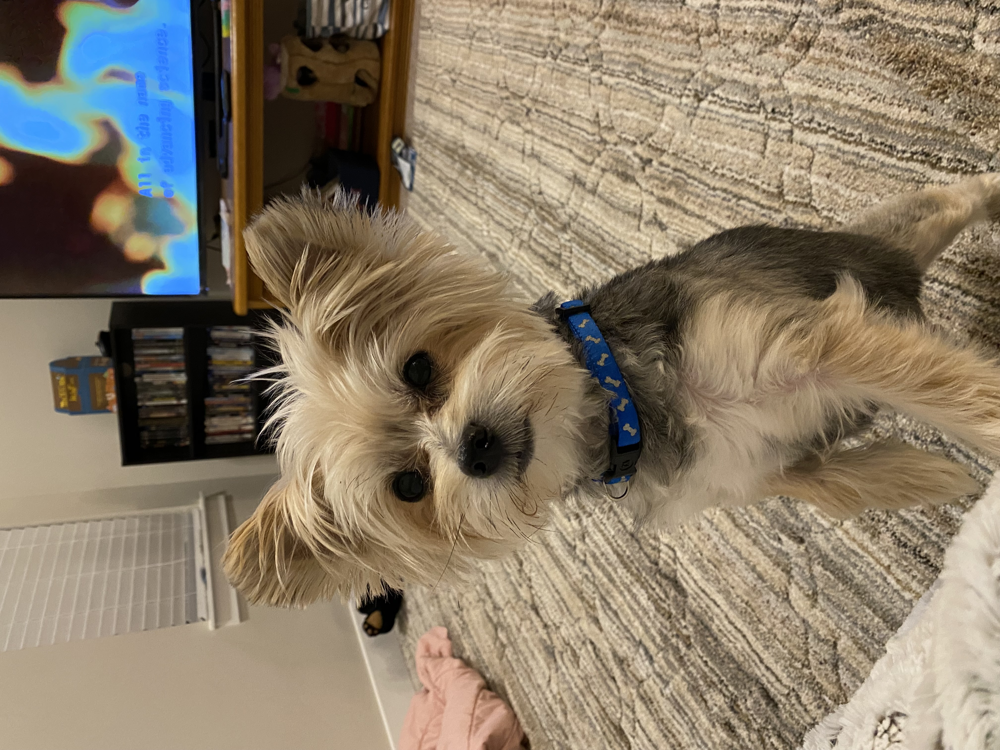

Professional Goals
Hi, my name is Megan! I am studying web development, to become a front-end web developer, so I can create beautiful websites for clients. I love the front-end because it focuses on the design, the look of a website, and you get to build something from scratch filling in all the content of a site. I love bringing someone's (or my own) vision to life! My goal is to eventually become a full-stack web developer after mastering the skills needed for front-end design. A full-stack web developer is someone who does the front-end and the back-end. The back-end is all the stuff of a website that the user can not see, it's what keeps the website running. My passion is for the front-end, but being able to do both is my goal.
Personal Life
I come from a big family. I am the youngest of 6, I have 2 older brothers and 3 older sisters. I am also an aunt to 14 kiddos (15 if you count the one on the way), 8 nephews and 6 nieces. I love spending time with my family, it's always a fun time! I am in a very happy relationship and look forward to my future with her. I also have a little Morkie dog, maltese and yorkie mix. I've had her since she was a little puppy and she's absolutely the best dog.
 Hobbies/Interests
I have many hobbies and interests:
- Video Games
- Reading
- Gardening
- Jigsaw Puzzles
- Board Games
- Collecting Things
I am really into the video games Apex Ledgends and Call of Duty at the moment, but I also really enjoy board games as well. When I'm not playing games with others, I enjoy solo board games. I like to read every night and I'm really into the Disney Twisted Tales Series at the moment but I also enjoy Avatar The Last Airbender comics. I highly recommend the Disney series if you love all things Disney. During the spring and summer I like to get outside and garden, I plant only fruits and vegetables, no flowers. I big hobbie of mine is doing jigsaw puzzles because it's relaxing and clears my mind, gives me a break from the stresses of life. I'm really good at them so I only do puzzles that are 1,000 pieces or greater and I have over 50 completed puzzles that I have glued!
One interesting fact about me that you might not be able to tell, is that I am autistic. I am a late diagnosed autistic because I am what they would call "high functioning" which makes it harder to spot, and it's harder to spot autism in girls as well. Something to always remember is that autism presents itself differently in each person, no two autistic people are the same. We each have different traits and we don't fit ALL the autisitc traits. I was only recently diagnosed but everything made more sense after getting a diagnosis. Autistic people can be very passionate about their hobbies and interests and that's the same with me, so I tend to go on and on about my interests when talking to people.